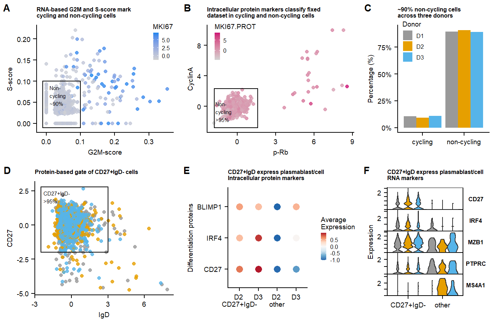
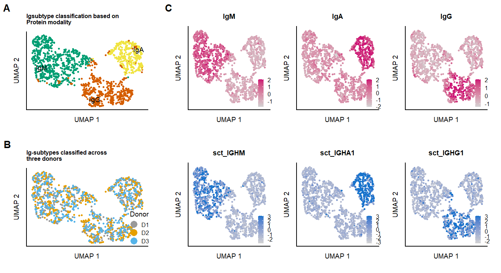
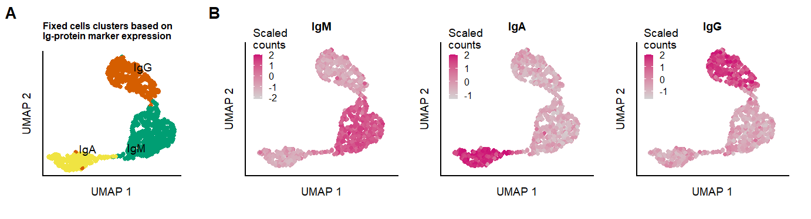

Cellstate
vanBuggenum
Last updated: 2021-12-06
Checks: 7 0
Knit directory: Multimodal-Plasmacell_manuscript/
This reproducible R Markdown analysis was created with workflowr (version 1.6.2). The Checks tab describes the reproducibility checks that were applied when the results were created. The Past versions tab lists the development history.
Great! Since the R Markdown file has been committed to the Git repository, you know the exact version of the code that produced these results.
Great job! The global environment was empty. Objects defined in the global environment can affect the analysis in your R Markdown file in unknown ways. For reproduciblity it’s best to always run the code in an empty environment.
The command set.seed(20211005) was run prior to running the code in the R Markdown file. Setting a seed ensures that any results that rely on randomness, e.g. subsampling or permutations, are reproducible.
Great job! Recording the operating system, R version, and package versions is critical for reproducibility.
Nice! There were no cached chunks for this analysis, so you can be confident that you successfully produced the results during this run.
Great job! Using relative paths to the files within your workflowr project makes it easier to run your code on other machines.
Great! You are using Git for version control. Tracking code development and connecting the code version to the results is critical for reproducibility.
The results in this page were generated with repository version 791178a. See the Past versions tab to see a history of the changes made to the R Markdown and HTML files.
Note that you need to be careful to ensure that all relevant files for the analysis have been committed to Git prior to generating the results (you can use wflow_publish or wflow_git_commit). workflowr only checks the R Markdown file, but you know if there are other scripts or data files that it depends on. Below is the status of the Git repository when the results were generated:
Ignored files:
Ignored: .Rhistory
Ignored: .Rproj.user/
Untracked files:
Untracked: analysis/supplements.Rmd
Untracked: code/Import_and_create_seuratobject.R
Untracked: data/Seq2Science/
Untracked: data/azimuth_PBMCs/
Untracked: data/azimuth_bonemarrow/
Untracked: data/citeseqcount_htseqcount.zip
Untracked: data/genelist.plots.diffmarkers.txt
Untracked: data/raw/
Untracked: data/supplementary/
Untracked: output/paper_figures/
Untracked: output/seu.PROT_fix.rds
Untracked: output/seu.PROT_live.rds
Untracked: output/seu.RNA.rds
Untracked: output/seu.fix_norm.rds
Untracked: output/seu.fix_norm_cellstate.rds
Untracked: output/seu.fix_norm_plasmacells.rds
Untracked: output/seu.live_norm.rds
Untracked: output/seu.live_norm_cellstate.rds
Untracked: output/seu.live_norm_plasmacells.rds
Untracked: output/seu.live_norm_plasmacells_RNA.rds
Unstaged changes:
Modified: code/load_packages.R
Note that any generated files, e.g. HTML, png, CSS, etc., are not included in this status report because it is ok for generated content to have uncommitted changes.
These are the previous versions of the repository in which changes were made to the R Markdown (analysis/cellstate.Rmd) and HTML (docs/cellstate.html) files. If you’ve configured a remote Git repository (see ?wflow_git_remote), click on the hyperlinks in the table below to view the files as they were in that past version.
| File | Version | Author | Date | Message |
|---|---|---|---|---|
| Rmd | 791178a | jessievb | 2021-12-06 | Plasmacell and cell-cycle gating analysis |
seu.fix <- readRDS( file = "output/seu.fix_norm.rds")
seu.live <- readRDS(file = "output/seu.live_norm.rds")Summary
- Cell-Cycle scoring
- Plasma cell markers (CD27high & IgDlow)
- Ig-subtype classification
Cell-cycle state
Cell-cycle scoring was performed scoring algorithm UCell. (For citation see (this preprint)
s.genes <- cc.genes.updated.2019$s.genes
g2m.genes <- cc.genes.updated.2019$g2m.genes
### --- Live cells ------
# Cell-cycle scoring was performed novel scoring algorithm https://carmonalab.github.io/UCell/UCell_Seurat_vignette.html
# Genesets used also in Seurat Cell-cycle scoring
seu.live <- AddModuleScore_UCell(seu.live, assay = "SCT",slot = "data",features = cc.genes.updated.2019)
## Fetch data for plotting
data.CC.live <- FetchData(seu.live, vars = c('G2M.Score', 'S.Score', "Phase", "donor", "s.genes_UCell", "g2m.genes_UCell"))
data.CC.live$MKI67 <- FetchData(seu.live[["SCT"]], "MKI67", slot = "scale.data")$MKI67
## Plot CC score
p.CCscore.MKI67.live <- ggplot(data = data.CC.live, aes(x = g2m.genes_UCell, y =s.genes_UCell , color = MKI67)) +
geom_point( position = 'jitter', alpha = 0.8) +
scale_color_gradientn(colors = c('lightgrey', 'dodgerblue2')) +
geom_rect(mapping=aes(xmin=-0.01, xmax=0.1, ymin=-0.01, ymax=0.1), color="black", alpha=0)+
cowplot::theme_cowplot() +
labs(title = "RNA-based G2M and S-score mark \ncycling and non-cycling cells", x = "G2M-score", y = "S-score")+
add.textsize+
#facet_wrap(.~donor)+
annotate(geom = "text", label = "Non-\ncycling \n~90%", x=0.01, y = 0.09,hjust = 0,vjust = 1, size = 2) +
theme(legend.position = c(0.85,0.85), legend.key.size = unit(2, 'mm'))
## Catagorize cells based on CCscore and MKI67 as cycling or non-cycling.
data.CC.live <- mutate(data.CC.live, Proliferation_state = ifelse(g2m.genes_UCell >= 0.1 | s.genes_UCell >=0.1 | MKI67 >=1 , "cycling","non-cycling"))
seu.live <- AddMetaData(seu.live, metadata = data.CC.live$Proliferation_state, col.name = "Cellcycle_state")
Percentage_differentiated.live <- data.CC.live %>% dplyr::count(Proliferation_state = factor(Proliferation_state),group = factor(donor)) %>%
group_by(group)%>%
mutate(pct = prop.table(n))
## Plot percentage cycling per donor
p.percentage.cyclinglive <- ggplot(Percentage_differentiated.live, aes(x = Proliferation_state , y = pct, fill = group)) + #label = scales::percent(pct,accuracy = 0.1)
geom_col(position = 'dodge') +
# geom_text(position = position_dodge(width = .9), # move to center of bars
# vjust = -0.5, # nudge above top of bar
# size = 1.8) +
scale_y_continuous(labels = scales::percent) +
cowplot::theme_cowplot() +
labs(title="~90% non-cycling cells \nacross three donors",x="", y = "Percentage (%)")+
scale_color_manual("Donor", values=c("#999999", "#E69F00", "#56B4E9"))+
scale_fill_manual("Donor",values=c("#999999", "#E69F00", "#56B4E9"))+
add.textsize+
theme(legend.position = c(0.05,0.85), legend.key.size = unit(4, 'mm'))
### --- fix cells ------
# Cell-cycle scoring was performed novel scoring algorithm https://carmonalab.github.io/UCell/UCell_Seurat_vignette.html
# Genesets used also in Seurat Cell-cycle scoring
seu.fix <- AddModuleScore_UCell(seu.fix, assay = "SCT",slot = "data",features = cc.genes.updated.2019)
## Fetch data for plotting
data.CC.fix <- FetchData(seu.fix, vars = c('G2M.Score', 'S.Score', "Phase", "donor", "s.genes_UCell", "g2m.genes_UCell"))
data.CC.fix$MKI67 <- FetchData(seu.fix[["SCT"]], "MKI67", slot = "scale.data")$MKI67
data.CC.fix$MKI67.PROT <- FetchData(seu.fix[["PROT"]], "Ki67", slot = "scale.data")$Ki67
data.CC.fix$`p-Rb` <- FetchData(seu.fix[["PROT"]], "p-Rb", slot = "scale.data")$`p-Rb`
data.CC.fix$CyclinA <- FetchData(seu.fix[["PROT"]], "Cyclin A", slot = "scale.data")$`Cyclin`
## Plot CC score
p.CCscore.MKI67.fix <- ggplot(data = data.CC.fix, aes(x = g2m.genes_UCell, y =s.genes_UCell , color = MKI67)) +
geom_point( position = 'jitter', alpha = 0.8) +
scale_color_gradientn(colors = c('lightgrey', 'dodgerblue2')) +
cowplot::theme_cowplot() +
labs(title = "RNA-based G2M and S-score mark \ncycling and non-cycling cells", x = "G2M-score", y = "S-score")+
add.textsize+
#facet_wrap(.~donor)+
geom_vline(xintercept = 0.1) +
geom_hline(yintercept = 0.07) +
annotate(geom = "text", label = "Non-\ncycling", x=0.01, y = 0.025, size = 2) +
theme(legend.position = c(0.85,0.85), legend.key.size = unit(2, 'mm'))
##The advantage of dataset is intracellular phospho-protein markers detected in protein dataset, which can be used to filter filter non-deviding cells. p-Rb and Cyclin A are used:
p.CCscore.pRb <- ggplot(data = data.CC.fix, aes(x = `p-Rb`, y =CyclinA , color = MKI67.PROT)) +
geom_point( position = 'jitter', alpha = 0.8) +
scale_color_gradientn(colors = c('lightgrey', 'deeppink3')) +
cowplot::theme_cowplot() +
labs(title = "Intracellular protein markers classify fixed \ndataset in cycling and non-cycling cells")+
add.textsize+
geom_rect(mapping=aes(xmin=-1.8, xmax=1.6, ymin=-2.8, ymax=2.3), color="black", alpha=0)+
annotate(geom = "text", label = "Non-\ncycling \n>95%", x=-1.7, y = 0.6,hjust = 0,vjust = 1, size = 2)+
theme(legend.position = c(0.05,0.85), legend.key.size = unit(2, 'mm'))
## Catagorize cells based on CCscore and MKI67 as cycling or non-cycling.
data.CC.fix <- mutate(data.CC.fix, Proliferation_state = ifelse( `p-Rb` >= 1.6 | CyclinA >= 2.3, "cycling","non-cycling"))
seu.fix <- AddMetaData(seu.fix, metadata = data.CC.fix$Proliferation_state, col.name = "Cellcycle_state")
Percentage_differentiated.fix <- data.CC.fix %>% dplyr::count(Proliferation_state = factor(Proliferation_state),group = factor(donor)) %>%
group_by(group)%>%
mutate(pct = prop.table(n))
## Plot percentage cycling per donor
p.percentage.cycling.fix <- ggplot(Percentage_differentiated.fix, aes(x = Proliferation_state , y = pct, fill = group, label = scales::percent(pct,accuracy = 0.1))) +
geom_col(position = 'dodge') +
geom_text(position = position_dodge(width = .9), # move to center of bars
vjust = -0.5, # nudge above top of bar
size = 1.8) +
scale_y_continuous(labels = scales::percent) +
cowplot::theme_cowplot() +
labs(title="Fixed dataset classification per donor \n>95% non-cycling cells",x="", y = "Percentage (%)")+
scale_color_manual("Donor", values=c("#E69F00", "#56B4E9"))+
scale_fill_manual("Donor",values=c("#E69F00", "#56B4E9"))+
add.textsize+
theme(legend.position = c(0.05,0.85), legend.key.size = unit(2, 'mm')) Differentiated Plasma-Blast/Cells
data.CC.fix$CD27 <- FetchData(seu.fix[["PROT"]], "CD27", slot = "scale.data")$CD27
data.CC.fix$IgD <- FetchData(seu.fix[["PROT"]], "IgD", slot = "scale.data")$IgD
data.CC.live$CD27 <- FetchData(seu.live[["PROT"]], "CD27", slot = "scale.data")$CD27
data.CC.live$IgD <- FetchData(seu.live[["PROT"]], "IgD", slot = "scale.data")$IgD
## ------ live
p.scatter.CD27.IgD.live <- ggplot(data = data.CC.live,aes(x = IgD, y = CD27, color = donor)) +
geom_point( position = 'jitter', alpha = 0.8) +
geom_rect(mapping=aes(xmin=-2.5, xmax=3, ymin=-2, ymax=2.8), color="black", alpha=0)+
cowplot::theme_cowplot() +
labs(title = "Protein-based gate of CD27+IgD- cells", x = "IgD", y = "CD27")+
theme(legend.position = "none") +
scale_color_manual("Donor", values=c("#999999", "#E69F00", "#56B4E9"))+
annotate(geom = "text", label = "CD27+IgD- \n>95%", x=-2.3, y = 2.5,hjust = 0,vjust = 1, size = 2)+
add.textsize
data.CC.live <- mutate(data.CC.live, class_switch_plasma = ifelse(IgD <= 3 & CD27 >= -2.5 , "CD27+IgD-","other"))
seu.live <- AddMetaData(seu.live, metadata = data.CC.live$class_switch_plasma, col.name = "CD27_IgD_state")
Percentage_class_switch_plasma.live <- data.CC.live %>% dplyr::count(class_switch_plasma = factor(class_switch_plasma),group = factor(donor)) %>%
group_by(group)%>%
mutate(pct = prop.table(n))
p.percentage.class_switch_plasma.live <- ggplot(Percentage_class_switch_plasma.live, aes(x = class_switch_plasma , y = pct, fill = group, label = scales::percent(pct, accuracy = 0.1))) +
geom_col(position = 'dodge') +
geom_text(position = position_dodge(width = .9), # move to center of bars
vjust = -0.5, # nudge above top of bar
size = 1.8) +
scale_y_continuous(labels = scales::percent) +
cowplot::theme_cowplot() +
labs(title="~95% cells in all three donors \nare Plasma Blast/Cells",x="", y = "Percentage (%)")+
scale_fill_manual(name = "Donor",values=c("#999999", "#E69F00", "#56B4E9")) +
theme(legend.position = c(0.7,0.85), legend.key.size = unit(2, "mm"))+
add.textsize
## --- fix
## fix
p.scatter.CD27.IgD.fix <- ggplot(data = data.CC.fix,aes(x = IgD, y = CD27, color = donor)) +
geom_point( position = 'jitter', alpha = 0.8) +
geom_rect(mapping=aes(xmin=-4, xmax=4.2, ymin=-1.3, ymax=2), color="black", alpha=0)+
cowplot::theme_cowplot() +
labs(title = "Protein-based gate of CD27+IgD- cells", x = "IgD", y = "CD27")+
theme(legend.position = c(0.85,0.85)) +
scale_color_manual("Donor", values=c( "#E69F00", "#56B4E9"))+
add.textsize +
xlim(c(NA,7.5))
data.CC.fix <- mutate(data.CC.fix, class_switch_plasma = ifelse(IgD <= 4.2 & CD27 >= -1.3 , "CD27+IgD-","other"))
seu.fix <- AddMetaData(seu.fix, metadata = data.CC.fix$class_switch_plasma, col.name = "CD27_IgD_state")
Percentage_class_switch_plasma.fix <- data.CC.fix %>% dplyr::count(class_switch_plasma = factor(class_switch_plasma),group = factor(donor)) %>%
group_by(group)%>%
mutate(pct = prop.table(n))
p.percentage.class_switch_plasma.fix <- ggplot(Percentage_class_switch_plasma.fix, aes(x = class_switch_plasma , y = pct, fill = group, label = scales::percent(pct, accuracy = 0.1))) +
geom_col(position = 'dodge') +
geom_text(position = position_dodge(width = .9), # move to center of bars
vjust = -0.5, # nudge above top of bar
size = 1.8) +
scale_y_continuous(labels = scales::percent) +
cowplot::theme_cowplot() +
labs(title="Fixed dataset % cells CD27+IgD-",x="", y = "Percentage (%)")+
scale_fill_manual(name = "Donor",values=c( "#E69F00", "#56B4E9")) +
theme(legend.position = c(0.7,0.9), legend.key.size = unit(2, 'mm'))+
add.textsizeCD27+IgDlow
To determine the cultures ‘differentiation state’ CD27-high & IgD-low cells are gated, representing differentiated plasmablast/cells.
seu.live <- SetIdent(seu.live,value = "CD27_IgD_state")
## RNA differential expression
markers.CD27IgD.RNA <- FindMarkers(seu.live, ident.1 = "CD27+IgD-", ident.2 = "other", assay = "SCT", logfc.threshold = 0.01, test.use = "wilcox", only.pos = T)
markers.CD27IgD.RNA <- filter(markers.CD27IgD.RNA, p_val <= 0.05)
p.CD27IgD.dotplot.genesign <-DotPlot(seu.live,assay = "SCT", features = rev(rownames(markers.CD27IgD.RNA)[1:20]), split.by = "donor", group.by = "CD27_IgD_state", cols = "RdBu",dot.scale = 3, scale.max = 100, scale.min = 0, scale = T, scale.by = "radius", col.min = -0.5, col.max = 0.5) +
labs(x = "Differentiation markers - RNA", y = "") +
cowplot::theme_cowplot() +
labs(title=paste0("Top 20 upregulated genes \n(", nrow(markers.CD27IgD.RNA)," total)"),x="Differential expressed genes \n(p-val < 0.05, logfc >= 0.01)", y = "")+
coord_flip()+
add.textsize +
theme(legend.position = "right", legend.key.size = unit(2, 'mm')) +
scale_y_discrete(labels = c("D1 \n","D2 \nCD27+IgD-", "D3","D1 \n","D2 \nother", "D3"))
#+ guides(size = "none",color = "none")
p.CD27IgD.Vln.gene.markers <- VlnPlot(seu.live, assay="SCT", features = c("CD27","IRF4", "MZB1", "PTPRC", "MS4A1"), split.by = "donor", group.by = "CD27_IgD_state", ncol =3, cols = c(colors.donors,colors.donors), combine = T, stack = T, flip = T) +
add.textsize +
theme(legend.position = "", legend.key.size = unit(2, 'mm')) +
labs(title="CD27+IgD express plasmablast/cell \nRNA markers",x="", y = "Expression") +
theme(axis.text.x = element_text(angle = 0, hjust = 0.5))
## RNA differential expression
markers.CD27IgD.RNA.neg <- FindMarkers(seu.live, ident.1 = "CD27+IgD-", ident.2 = "other", assay = "SCT", logfc.threshold = -0.01, test.use = "wilcox", only.pos = F)
markers.CD27IgD.RNA.neg <- filter(markers.CD27IgD.RNA.neg, p_val <= 0.05, avg_log2FC < -0.01)
p.CD27IgD.dotplot.genesign.neg <-DotPlot(seu.live,assay = "SCT", features = rev(rownames(markers.CD27IgD.RNA.neg)[1:20]), split.by = "donor", group.by = "CD27_IgD_state", cols = "RdBu",dot.scale = 3, scale.max = 100, scale.min = 0, scale = T, scale.by = "size", col.min = -0.5, col.max = 0.5) +
labs(x = "Differentiation markers - RNA", y = "") +
cowplot::theme_cowplot() +
labs(title=paste0("Top 20 downregulated genes \n(", nrow(markers.CD27IgD.RNA.neg)," total)"),x="Differential expressed genes \n(p-val < 0.05, logfc <= -0.01)", y = "")+
coord_flip()+
add.textsize +
theme(legend.position = "right", legend.key.size = unit(2, 'mm')) +
scale_y_discrete(labels = c("D1 \n","D2 \nCD27+IgD-", "D3","D1 \n","D2 \nother", "D3")) +
guides(size = guide_legend(title = "Percent \nexpressed"),color = guide_colorbar(title = "Average scaled\nexpression"))
#+ guides(size = "none",color = "none")
## Surface proteins
markers.CD27IgD.PROT <- FindMarkers(seu.live, ident.1 = "CD27+IgD-", ident.2 = "other", assay = "PROT", logfc.threshold = 0.01, test.use = "wilcox", only.pos = T)
markers.CD27IgD.PROT <- filter(markers.CD27IgD.PROT, p_val <= 0.05)
p.CD27IgD.dotplot.PROTsign <-DotPlot(seu.live,assay = "PROT", features = rev(rownames(markers.CD27IgD.PROT)), split.by = "donor", group.by = "CD27_IgD_state", cols = "RdBu",dot.scale = 3, scale.max = 100, scale.min = 0, scale = T, scale.by = "radius", col.min = -0.5, col.max = 0.5) +
cowplot::theme_cowplot() +
labs(title="Differential upregulated \nSurface protein markers",x="Surface Proteins \n(p-val < 0.005, logfc >= 0.01)", y = "")+
coord_flip()+
add.textsize +
theme(legend.position = "right", legend.key.size = unit(2, 'mm')) +
scale_y_discrete(labels = c("D1 \n","D2 \nCD27+IgD-", "D3","D1 \n","D2 \nother", "D3"))+
guides(size = "none",color = "none")
markers.CD27IgD.PROT.neg <- FindMarkers(seu.live, ident.1 = "CD27+IgD-", ident.2 = "other", assay = "PROT", logfc.threshold = 0.01, test.use = "wilcox", only.pos = F)
markers.CD27IgD.PROT.neg <- filter(markers.CD27IgD.PROT.neg, p_val <= 0.005, avg_log2FC < -0.01)
p.CD27IgD.dotplot.PROTsign.neg <-DotPlot(seu.live,assay = "PROT", features = rev(rownames(markers.CD27IgD.PROT.neg)), split.by = "donor", group.by = "CD27_IgD_state", cols = "RdBu",dot.scale = 3, scale.max = 100, scale.min = 0, scale = T, scale.by = "radius", col.min = -0.5, col.max = 0.5) +
cowplot::theme_cowplot() +
labs(title="Differential downregulated \nSurface protein markers",x="Surface Proteins \n(p-val < 0.005, logfc <= -0.01)", y = "")+
coord_flip()+
add.textsize +
theme(legend.position = "right", legend.key.size = unit(2, 'mm')) +
scale_y_discrete(labels = c("D1 \n","D2 \nCD27+IgD-", "D3","D1 \n","D2 \nother", "D3"))+
guides(size = "none",color = guide_colorbar(title = "Average scaled\nexpression"))
#+guides(size = "none",color = "none")
#
# p.CD27IgD.Vln.PROT.markers <- VlnPlot(seu.live, assay="PROT", features = c("CD27","SLAMF7", "CD44", "CD45RB", "LAG3"), split.by = "donor", group.by = "CD27_IgD_state", ncol =3, cols = c(colors.donors,colors.donors), combine = T, stack = T, flip = T) +
# add.textsize +
# theme(legend.position = "right", legend.key.size = unit(2, 'mm')) +
# labs(title="CD27+IgD express plasmablast/cell \nSurface protein markers",x="", y = "Expression") +
# theme(axis.text.x = element_text(angle = 0, hjust = 0.5))
## Intracellular proteins
seu.fix <- SetIdent(seu.fix,value = "CD27_IgD_state")
markers.CD27IgD.PROT.intra <- FindMarkers(seu.fix, ident.1 = "CD27+IgD-", ident.2 = "other", assay = "PROT", logfc.threshold = 0.05, test.use = "wilcox", only.pos = T)
markers.CD27IgD.PROT.intra <- filter(markers.CD27IgD.PROT.intra, p_val <= 0.05)
p.CD27IgD.dotplot.PROT.intra.sign <- DotPlot(seu.fix,assay = "PROT", features = rev(rownames(markers.CD27IgD.PROT.intra)), split.by = "donor", group.by = "CD27_IgD_state", cols = "RdBu",dot.scale = 3, scale.max = 100, scale.min = 0, scale = T, scale.by = "radius", col.min = -0.5, col.max = 0.5) +
cowplot::theme_cowplot() +
labs(title="Differential upregulated \nIntracellular protein markers",x="Intracellular proteins \n(p-val < 0.005, logfc >= 0.01)", y = "")+
coord_flip()+
add.textsize +
theme(legend.position = "none", legend.key.size = unit(2, 'mm')) +
scale_y_discrete(labels = c("D2 \nCD27+IgD-", "D3","D2 \nother", "D3"))
markers.CD27IgD.PROT.intra.neg <- FindMarkers(seu.fix, ident.1 = "CD27+IgD-", ident.2 = "other", assay = "PROT", logfc.threshold = 0.01, test.use = "wilcox", only.pos = F)
markers.CD27IgD.PROT.intra.neg <- filter(markers.CD27IgD.PROT.intra.neg, p_val <= 0.005, avg_log2FC < -0.01)
p.CD27IgD.dotplot.PROTsign.intra.neg <-DotPlot(seu.fix,assay = "PROT", features = rev(rownames(markers.CD27IgD.PROT.intra.neg)), split.by = "donor", group.by = "CD27_IgD_state", cols = "RdBu",dot.scale = 3, scale.max = 100, scale.min = 0, scale = T, scale.by = "radius", col.min = -0.5, col.max = 0.5) +
cowplot::theme_cowplot() +
labs(title="Differential downregulated \nSurface protein markers",x="Intracellular Proteins \n(p-val < 0.005, logfc <= -0.01)", y = "")+
coord_flip()+
add.textsize +
theme(legend.position = "right", legend.key.size = unit(2, 'mm')) +
scale_y_discrete(labels = c("D1 \n","D2 \nCD27+IgD-", "D3","D1 \n","D2 \nother", "D3"))+
guides(size = "none",color = guide_colorbar(title = "Average scaled\nexpression"))
markers.forviolin <- c("CD138","BLIMP1","IRF4", "IRF8", "XBP1", "CD27")[c("CD138","BLIMP1","IRF4", "IRF8", "XBP1", "CD27") %in% rev(rownames(markers.CD27IgD.PROT.intra))]
p.CD27IgD.Vln.PROT.markers <- VlnPlot(seu.fix, assay="PROT", features = rev(c(markers.forviolin)), split.by = "donor", group.by = "CD27_IgD_state", ncol =3, cols = c(colors.donors[2:3],colors.donors[2:3]), combine = T, stack = T, flip = T) +
add.textsize +
theme(legend.position = "right", legend.key.size = unit(2, 'mm')) +
labs(title="CD27+IgD express plasmablast/cell \nIntracellular protein markers",x="", y = "Expression") +
theme(axis.text.x = element_text(angle = 0, hjust = 0.5))
p.CD27IgD.dotplot.PROT.intra.markers <- DotPlot(seu.fix,assay = "PROT", features = rev(c(markers.forviolin)), split.by = "donor", group.by = "CD27_IgD_state", cols = "RdBu",dot.scale = 3, scale.max = 100, scale.min = 0, scale = T, scale.by = "radius", col.min = -1, col.max = 1) +
labs(x = "Differentiation markers - Surface Proteins", y = "") +
cowplot::theme_cowplot() +
labs(title="CD27+IgD express plasmablast/cell \nIntracellular protein markers",x="Differentiation proteins", y = "", colour = "Legend Title\n")+
coord_flip()+
add.textsize +
theme(legend.position = "right", legend.key.size = unit(2, 'mm')) +
scale_y_discrete(labels = c("D2 \nCD27+IgD-", "D3","D2 \nother", "D3")) +
guides(size = "none",color = guide_colorbar(title = "Average \nExpression"))Ig-classifaction
The supernatant of differentiated cells shows excretion of IgA and IgG antibodies, showing these cell-types should be within the population at 11 days. Using protein-measurments from antibodies against the major Ig-classes, and (in live-cell dataset) the Ig-genes, cells are clustered and represented in a UMAP.
## Run PCA on Ig proteins
seu.fix <- RunPCA(seu.fix, reduction.name = 'pcaIG', features = c("IgM","IgA","IgG", "IgD", "IgE"))
seu.fix <- RunUMAP(seu.fix,dims = 1:4, reduction = "pcaIG", reduction.name = "IGUMAP")
seu.fix <- FindNeighbors(seu.fix, reduction = "pcaIG",assay = "PROT", dims = 1:4, graph.name = "pcaIG_nn")
seu.fix <- FindClusters(seu.fix, graph.name = "pcaIG_nn", algorithm = 4,resolution = 0.2, verbose = FALSE)
seu.fix[["clusters_pcaIG"]] <- Idents(object = seu.fix)
seu.fix <- RenameIdents(object = seu.fix, `1` = "IgM", `2` = "IgG", `3` = "IgA")
seu.fix[["clusters_pcaIG_named"]] <- Idents(object = seu.fix)
p.umap.Ig.prot.fix <- FeaturePlot(seu.fix, features = c("IgM","IgA","IgG"),slot = "scale.data", reduction = 'IGUMAP', max.cutoff = 2,
cols = c("lightgrey","deeppink3"), ncol = 3, pt.size = 0.9) &
labs(x = "UMAP 1", y = "UMAP 2", color = "Scaled \ncounts") &
theme_half_open()&
theme(legend.position = c(0.05,0.85), legend.key.size = unit(2, 'mm')) &
theme(axis.text.x = element_blank(),
axis.text.y = element_blank(),
text = element_text(size=7), axis.ticks = element_blank(),
axis.text=element_text(size=7),
plot.title = element_text(size=7, face = "bold",hjust = 0.5))
p.clusters.umap.fix <- DimPlot(seu.fix, reduction = 'IGUMAP', label = TRUE, repel = TRUE, label.size = 2.5, cols = c("#009E73", "#D55E00","#F0E442")
) &
labs(x = "UMAP 1", y = "UMAP 2", color = "Clusters", title = "Fixed cells clusters based on \nIg-protein marker expression") &
theme_half_open()&
theme(legend.position = "none", legend.key.size = unit(2, 'mm')) &
theme(axis.text.x = element_blank(),
axis.text.y = element_blank(),
text = element_text(size=7), axis.ticks = element_blank(),
axis.text=element_text(size=7),
plot.title = element_text(size=6, face = "bold"))
## ---- live cells
## Run PCA on Ig proteins and on Ig genes
seu.live <- RunPCA(seu.live, assay = "PROT",reduction.name = 'pcaIGPROT', features = c("IgM","IgA","IgG", "IgD", "IgE"))
seu.live <- RunUMAP(seu.live,dims = 1:4, reduction = "pcaIGPROT", reduction.name = "IGUMAP")
seu.live <- FindNeighbors(seu.live, reduction = "pcaIGPROT",assay = "PROT", dims = 1:4, graph.name = "pcaIG_nn")
seu.live <- FindClusters(seu.live, graph.name = "pcaIG_nn", algorithm = 4,resolution = 0.2, verbose = FALSE)
seu.live[["clusters_pcaIG"]] <- Idents(object = seu.live)
seu.live <- RenameIdents(object = seu.live, `1` = "IgM", `2` = "IgG", `3` = "IgA")
seu.live[["clusters_pcaIG_named"]] <- Idents(object = seu.live)
#
#
# Ig.genes <- c("IGHM", sort(grep("^IGH[MHAG][0-9]", rownames(seu.live[["SCT"]]), value = T)))
# seu.live <- RunPCA(seu.live,assay = "SCT", reduction.name = 'pcaIGRNA', features = Ig.genes)
#
# seu.live <- FindMultiModalNeighbors(
# seu.live, reduction.list = list("pcaIGRNA", "pcaIGPROT"),
# dims.list = list(1:5, 1:4), modality.weight.name = "RNA.weight"
# )
#
# seu.live <- RunUMAP(seu.live, nn.name = "weighted.nn", reduction.name = "wnn.umap", reduction.key = "wnnUMAP_")
# seu.live <- FindClusters(seu.live, graph.name = "wsnn", algorithm = 4, resolution = 0.2, verbose = FALSE)
# seu.live[["clusters_wnn"]] <- Idents(object = seu.live)
#
#
# seu.live <- RenameIdents(object = seu.live, `1` = "IgM", `2` = "IgG", `3` = "IgA", `4` = "low Ig \ngenes")
# seu.live[["clusters_wnnIG_named"]] <- Idents(object = seu.live)
#
p.umap.Ig.prot.live <- FeaturePlot(seu.live, features = c("IgM","IgA","IgG"),slot = "scale.data", reduction = 'IGUMAP', max.cutoff = 2,
cols = c("lightgrey","deeppink3"), ncol = 3, pt.size = 0.5) &
labs(x = "UMAP 1", y = "UMAP 2", color = "") &
theme_half_open()&
theme(legend.position = c(0.85,0.26), legend.key.size = unit(2, 'mm')) &
theme(axis.text.x = element_blank(),
axis.text.y = element_blank(),
text = element_text(size=7), axis.ticks = element_blank(),
axis.text=element_text(size=7),
plot.title = element_text(size=7, face = "bold",hjust = 0.5))
p.umap.Ig.RNA.live <- FeaturePlot(seu.live, features = c("IGHM","IGHA1","IGHG1"),slot = "scale.data", reduction = 'IGUMAP', max.cutoff = 3,
cols = c("lightgrey","dodgerblue3"), ncol = 3, pt.size = 0.5) &
labs(x = "UMAP 1", y = "UMAP 2", color = "") &
theme_half_open()&
theme(legend.position = c(0.85,0.26), legend.key.size = unit(2, 'mm')) &
theme(axis.text.x = element_blank(),
axis.text.y = element_blank(),
text = element_text(size=7), axis.ticks = element_blank(),
axis.text=element_text(size=7),
plot.title = element_text(size=7, face = "bold",hjust = 0.5))
p.clusters.umap.live <- DimPlot(seu.live, reduction = 'IGUMAP', label = TRUE, repel = TRUE, label.size = 2.5,pt.size = 0.5, cols = c("#009E73", "#D55E00","#F0E442","grey")
) &
labs(x = "UMAP 1", y = "UMAP 2", color = "Clusters", title = "Igsubtype classification based on \nProtein modality") &
theme_half_open()&
theme(legend.position = "none", legend.key.size = unit(1, 'mm')) &
theme(axis.text.x = element_blank(),
axis.text.y = element_blank(),
text = element_text(size=7), axis.ticks = element_blank(),
axis.text=element_text(size=7),
plot.title = element_text(size=6, face = "bold"))
p.donor.umap.live <- DimPlot(seu.live, reduction = 'IGUMAP', group.by = "donor",label = F, pt.size = 0.5,repel = TRUE, label.size = 2.5, cols = colors.donors) &
labs(x = "UMAP 1", y = "UMAP 2", color = "Donor", title = "Ig-subtypes classified across \nthree donors") &
theme_half_open()&
theme(legend.position = c(0.85, 0.24), legend.key.size = unit(1, 'mm'), legend.text =element_text(size=6), legend.title =element_text(size=7) ) &
theme(axis.text.x = element_blank(),
axis.text.y = element_blank(),
text = element_text(size=7), axis.ticks = element_blank(),
axis.text=element_text(size=7),
plot.title = element_text(size=6, face = "bold"))Figure 2
fig.2.row1 <- plot_grid(p.CCscore.MKI67.live,
p.CCscore.pRb,
p.percentage.cyclinglive,
labels = panellabels[1:3], label_size = 10, ncol = 3, rel_widths = c(1.2,1.2,0.9))
fig.2.row2 <- plot_grid(p.scatter.CD27.IgD.live,
p.CD27IgD.dotplot.PROT.intra.markers,
p.CD27IgD.Vln.gene.markers,
labels = panellabels[4:6], label_size = 10, ncol = 3, rel_widths = c(1.2,1.2,0.9))
Fig.2.full <- plot_grid(fig.2.row1, fig.2.row2, labels = "", label_size = 10, ncol = 1, rel_heights = c(1,1))
ggsave(Fig.2.full, filename = "output/paper_figures/Fig.2.pdf", width = 183, height = 120, units = "mm", dpi = 300, useDingbats = FALSE)
ggsave(Fig.2.full, filename = "output/paper_figures/Fig.2.png", width = 183, height = 120, units = "mm", dpi = 300)Fig.2.full
Figure 3
fig.3.row1 <- plot_grid(p.clusters.umap.live, p.umap.Ig.prot.live,labels = panellabels[c(1,3)], label_size = 10, rel_widths = c(1,2.1))
fig.3.row2 <- plot_grid(p.donor.umap.live, p.umap.Ig.RNA.live,labels = panellabels[2], label_size = 10,
rel_widths = c(1,2.1))
Fig.3.full <- plot_grid(fig.3.row1, fig.3.row2, labels = "", label_size = 10, ncol = 1, rel_heights = c(1,1))
ggsave(Fig.3.full, filename = "output/paper_figures/Fig.3.pdf", width = 183, height = 100, units = "mm", dpi = 300, useDingbats = FALSE)
ggsave(Fig.3.full, filename = "output/paper_figures/Fig.3.png", width = 183, height = 100, units = "mm", dpi = 300)Fig.3.full
Supplementary figures
p.percentages <- plot_grid(p.percentage.cycling.fix,
p.percentage.class_switch_plasma.live,
p.percentage.class_switch_plasma.fix,
labels = panellabels[1:3], label_size = 10, ncol = 3, rel_widths = c(1,1))
p.dotplot.genes<- plot_grid(p.CD27IgD.dotplot.genesign,
p.CD27IgD.dotplot.genesign.neg,
labels = c(panellabels[4:5]), label_size = 10, ncol = 2, rel_heights = c(1,1))
p.dotplot.proteins.surface <- plot_grid(p.CD27IgD.dotplot.PROTsign,
p.CD27IgD.dotplot.PROTsign.neg,
labels = c(panellabels[6:7]), label_size = 10, ncol = 2, rel_heights = c(1,1))
p.dotplot.proteins.intra <- plot_grid(p.CD27IgD.dotplot.PROT.intra.sign,p.CD27IgD.dotplot.PROTsign.intra.neg,
labels = c(panellabels[8:9]), label_size = 10, ncol = 2, rel_heights = c(1,1))
p.supplement.percentages.dotplots <- plot_grid(p.percentages,
p.dotplot.genes,
p.dotplot.proteins.surface,
p.dotplot.proteins.intra,
labels = "", label_size = 10, ncol = 1, rel_heights = c(1.5,1.7, 1.25,1.15))
ggsave(p.supplement.percentages.dotplots, filename = "output/paper_figures/Suppl_CC_CD27_dotplots.pdf", width = 183, height = 220, units = "mm", dpi = 300, useDingbats = FALSE)
ggsave(p.supplement.percentages.dotplots, filename = "output/paper_figures/Suppl_CC_CD27_dotplots.png", width = 183, height = 220, units = "mm", dpi = 300)p.supplement.percentages.dotplots Supplementary figure Additional information supplementing figure 2. a. fixed data percentage cycling. b-c. Percentages CD27+IgD- cells in datasets. d-j Differentially expressed genes and proteins.
Supplementary figure Additional information supplementing figure 2. a. fixed data percentage cycling. b-c. Percentages CD27+IgD- cells in datasets. d-j Differentially expressed genes and proteins.
p.umap.fix.all <- plot_grid(p.clusters.umap.fix,
p.umap.Ig.prot.fix, labels = panellabels[c(1,2)],
label_size = 10,
rel_widths = c(1,3))
ggsave(p.umap.fix.all, filename = "output/paper_figures/Suppl_fix_IgClass.pdf", width = 183, height = 54, units = "mm", dpi = 300, useDingbats = FALSE)
ggsave(p.umap.fix.all, filename = "output/paper_figures/Suppl_fix_IgClass.png", width = 183, height = 54, units = "mm", dpi = 300)p.umap.fix.all Supplementary figure Fixed cells Ig-classes
Filter & Save Seurat dataobjects
Fixed-cell dataset: (original and CD27+IgD- object )
message("Fixed dataset:")
seu.fixAn object of class Seurat
10114 features across 1038 samples within 3 assays
Active assay: PROT (76 features, 76 variable features)
2 other assays present: RNA, SCT
2 dimensional reductions calculated: pcaIG, IGUMAPseu.fix.filtered <- subset(seu.fix, Cellcycle_state == "non-cycling" & CD27_IgD_state == "CD27+IgD-")
message("CD27+IgD- object:")
seu.fix.filteredAn object of class Seurat
10114 features across 940 samples within 3 assays
Active assay: PROT (76 features, 76 variable features)
2 other assays present: RNA, SCT
2 dimensional reductions calculated: pcaIG, IGUMAPLive-cell dataset: (original and CD27+IgD- object )
seu.liveAn object of class Seurat
20366 features across 1433 samples within 3 assays
Active assay: PROT (50 features, 50 variable features)
2 other assays present: RNA, SCT
2 dimensional reductions calculated: pcaIGPROT, IGUMAPseu.live.filtered <- subset(seu.live, Cellcycle_state == "non-cycling" & CD27_IgD_state == "CD27+IgD-")
seu.live.filteredAn object of class Seurat
20366 features across 1231 samples within 3 assays
Active assay: PROT (50 features, 50 variable features)
2 other assays present: RNA, SCT
2 dimensional reductions calculated: pcaIGPROT, IGUMAPSave seurat objects with all cells & information on CC , CD27, and Ig-subclasses.
saveRDS(seu.fix, "output/seu.fix_norm_cellstate.rds")
saveRDS(seu.live, "output/seu.live_norm_cellstate.rds")Save seurat objects with selected non-cycling & CD27+IgD- cells.
saveRDS(seu.fix.filtered, "output/seu.fix_norm_plasmacells.rds")
saveRDS(seu.live.filtered, "output/seu.live_norm_plasmacells.rds")seu.live.filtered.RNA <- seu.live.filtered
DefaultAssay(seu.live.filtered.RNA) <- "RNA"
seu.live.filtered.RNA[["SCT"]] <- NULL
seu.live.filtered.RNA[["PROT"]] <- NULL
saveRDS(seu.live.filtered.RNA, "output/seu.live_norm_plasmacells_RNA.rds")
sessionInfo()R version 4.0.3 (2020-10-10)
Platform: x86_64-w64-mingw32/x64 (64-bit)
Running under: Windows 10 x64 (build 19042)
Matrix products: default
locale:
[1] LC_COLLATE=English_Netherlands.1252 LC_CTYPE=English_Netherlands.1252
[3] LC_MONETARY=English_Netherlands.1252 LC_NUMERIC=C
[5] LC_TIME=English_Netherlands.1252
attached base packages:
[1] parallel stats4 stats graphics grDevices utils datasets
[8] methods base
other attached packages:
[1] ggupset_0.3.0 RColorBrewer_1.1-2 enrichplot_1.10.2
[4] UCell_1.0.0 data.table_1.14.2 scales_1.1.1
[7] cowplot_1.1.1 ggthemes_4.2.4 kableExtra_1.3.4
[10] knitr_1.36 org.Hs.eg.db_3.12.0 AnnotationDbi_1.52.0
[13] IRanges_2.24.1 S4Vectors_0.28.1 Biobase_2.50.0
[16] BiocGenerics_0.36.1 forcats_0.5.1 stringr_1.4.0
[19] dplyr_1.0.7 purrr_0.3.4 readr_2.1.0
[22] tidyr_1.1.4 tibble_3.1.5 ggplot2_3.3.5
[25] tidyverse_1.3.1 Matrix_1.3-4 SeuratObject_4.0.2
[28] Seurat_4.0.2 workflowr_1.6.2
loaded via a namespace (and not attached):
[1] utf8_1.2.2 reticulate_1.22 tidyselect_1.1.1
[4] RSQLite_2.2.8 htmlwidgets_1.5.4 BiocParallel_1.24.1
[7] grid_4.0.3 Rtsne_0.15 scatterpie_0.1.7
[10] munsell_0.5.0 ragg_1.2.0 codetools_0.2-16
[13] ica_1.0-2 future_1.23.0 miniUI_0.1.1.1
[16] withr_2.4.2 colorspace_2.0-2 GOSemSim_2.16.1
[19] highr_0.9 rstudioapi_0.13 ROCR_1.0-11
[22] tensor_1.5 DOSE_3.16.0 listenv_0.8.0
[25] labeling_0.4.2 git2r_0.28.0 polyclip_1.10-0
[28] bit64_4.0.5 farver_2.1.0 rprojroot_2.0.2
[31] parallelly_1.29.0 vctrs_0.3.8 generics_0.1.1
[34] xfun_0.26 R6_2.5.1 graphlayouts_0.7.2
[37] fgsea_1.16.0 spatstat.utils_2.2-0 cachem_1.0.6
[40] assertthat_0.2.1 promises_1.2.0.1 ggraph_2.0.5
[43] gtable_0.3.0 globals_0.14.0 goftest_1.2-2
[46] tidygraph_1.2.0 rlang_0.4.11 systemfonts_1.0.3
[49] splines_4.0.3 lazyeval_0.2.2 spatstat.geom_2.2-2
[52] broom_0.7.10 yaml_2.2.1 reshape2_1.4.4
[55] abind_1.4-5 modelr_0.1.8 backports_1.3.0
[58] httpuv_1.6.3 qvalue_2.22.0 tools_4.0.3
[61] ellipsis_0.3.2 spatstat.core_2.3-0 jquerylib_0.1.4
[64] ggridges_0.5.3 Rcpp_1.0.7 plyr_1.8.6
[67] rpart_4.1-15 deldir_1.0-2 pbapply_1.5-0
[70] viridis_0.6.2 zoo_1.8-9 haven_2.4.3
[73] ggrepel_0.9.1 cluster_2.1.0 here_1.0.1
[76] fs_1.5.0 magrittr_2.0.1 RSpectra_0.16-0
[79] scattermore_0.7 DO.db_2.9 lmtest_0.9-38
[82] reprex_2.0.1 RANN_2.6.1 whisker_0.4
[85] fitdistrplus_1.1-6 matrixStats_0.61.0 hms_1.1.1
[88] patchwork_1.1.1 mime_0.12 evaluate_0.14
[91] xtable_1.8-4 readxl_1.3.1 gridExtra_2.3
[94] compiler_4.0.3 shadowtext_0.0.9 KernSmooth_2.23-17
[97] crayon_1.4.2 htmltools_0.5.2 ggfun_0.0.4
[100] mgcv_1.8-33 later_1.3.0 tzdb_0.2.0
[103] lubridate_1.8.0 DBI_1.1.1 tweenr_1.0.2
[106] dbplyr_2.1.1 rappdirs_0.3.3 MASS_7.3-53
[109] cli_3.1.0 igraph_1.2.6 pkgconfig_2.0.3
[112] plotly_4.10.0 spatstat.sparse_2.0-0 xml2_1.3.2
[115] svglite_2.0.0 bslib_0.3.1 webshot_0.5.2
[118] rvest_1.0.2 digest_0.6.28 sctransform_0.3.2
[121] RcppAnnoy_0.0.19 spatstat.data_2.1-0 fastmatch_1.1-3
[124] rmarkdown_2.11 cellranger_1.1.0 leiden_0.3.9
[127] uwot_0.1.10 shiny_1.7.1 lifecycle_1.0.1
[130] nlme_3.1-149 jsonlite_1.7.2 limma_3.46.0
[133] viridisLite_0.4.0 fansi_0.5.0 pillar_1.6.4
[136] lattice_0.20-41 fastmap_1.1.0 httr_1.4.2
[139] survival_3.2-7 GO.db_3.12.1 glue_1.4.2
[142] png_0.1-7 bit_4.0.4 ggforce_0.3.3
[145] stringi_1.7.5 sass_0.4.0 blob_1.2.2
[148] textshaping_0.3.6 memoise_2.0.1 irlba_2.3.3
[151] future.apply_1.8.1